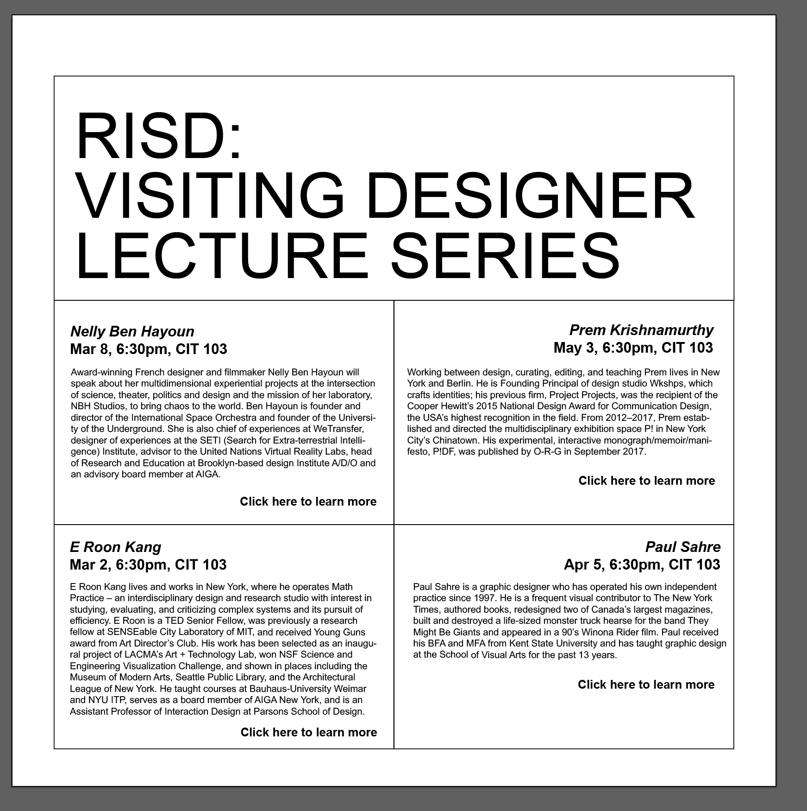
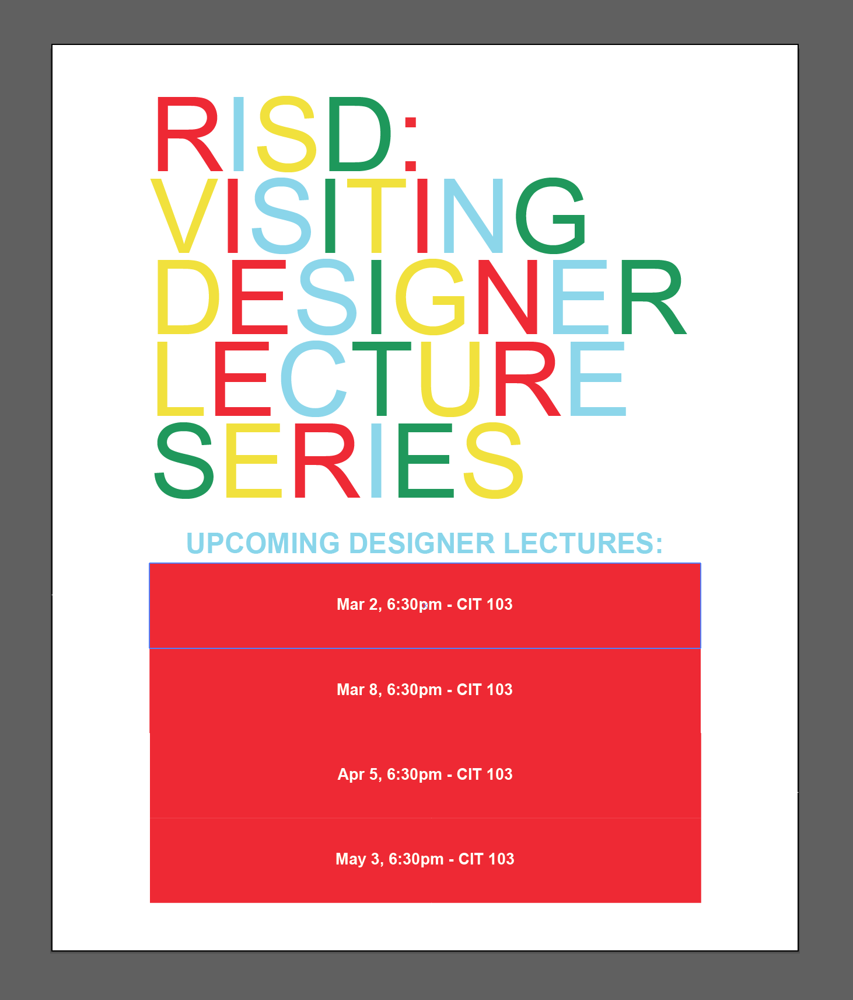
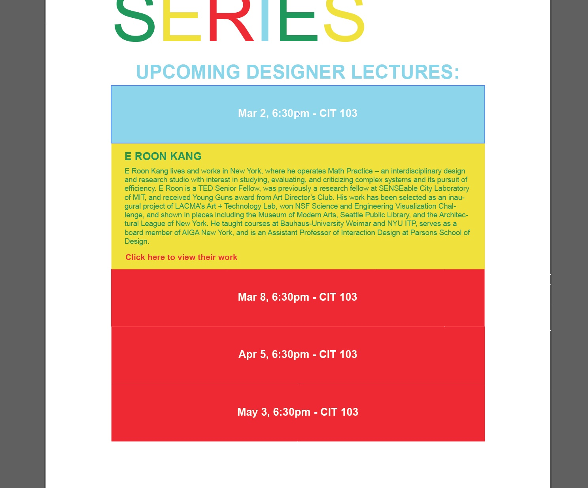

Intro
When iterating different ways to design my typographic poster, I wanted to keep it simple by just creating a simple grid with all of the information in front of you. I had planned to make the font I created as the header as it would make the most sense since it’s so large and attention grabbing. Below is the planning I did on illustrator to configure the layout of my website. I decided to choose the RISD information package as it would best suit my fonts since it’s more playful and design-heavy.

Final Direction
After inputting my font into the header, I wanted to make the page a bit more layered and light after looking at it altogether. The font was so heavy that it felt a bit too much when together with all of the body text underneath it. I decided to change the direction and remove the grid after I looked up how to create a collapsible box online. This way, the viewer can focus on the title, and then navigate through the information more interactively. This makes the landing page more digestible as I have a bit of a complicated font. Below are screenshots of some of the planning I did for the updated landing page and collapsible box.

